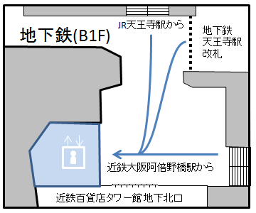
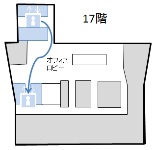
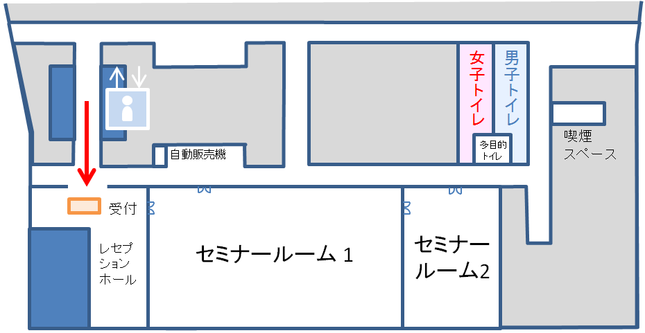
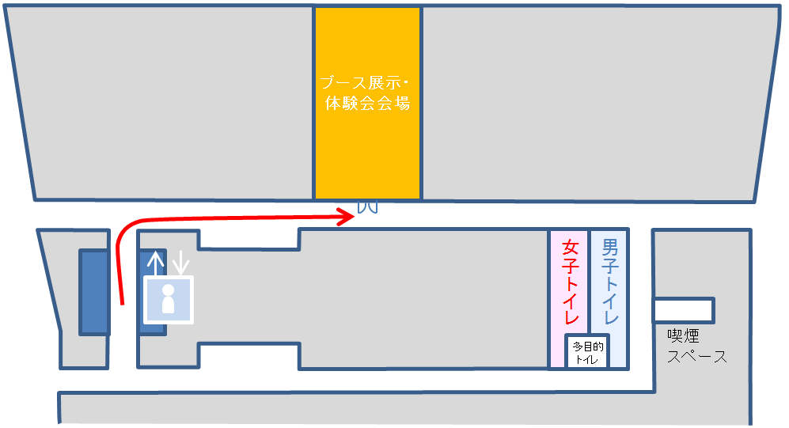

会場までのアクセス
〒545-6090 大阪市阿倍野区阿倍野筋1-1-43 あべのハルカス
最寄り駅
- 近鉄「大阪阿部野橋」駅 西改札
- JR「天王寺」駅 中央改札
- 地下鉄御堂筋線「天王寺」駅 西改札
- 地下鉄谷町線「天王寺」駅 南西/南東改札
- 阪堺電軌上町線「天王寺駅前」駅
受付までの行き方
- 近鉄百貨店タワー館地下北口となりの【地下１階】エレベーターに乗って17階へ
 - 17階で一度降りて、エレベーターを乗り換えます。オフィスフロア用の【低階(17-25F)用】エレベーターに乗って24階へ
 - 24階へで降りれば受付です。
- ブース展示、Project Morpheus 体験会は、23階で行っております。エレベーターで行き来ください。
24階

23階
